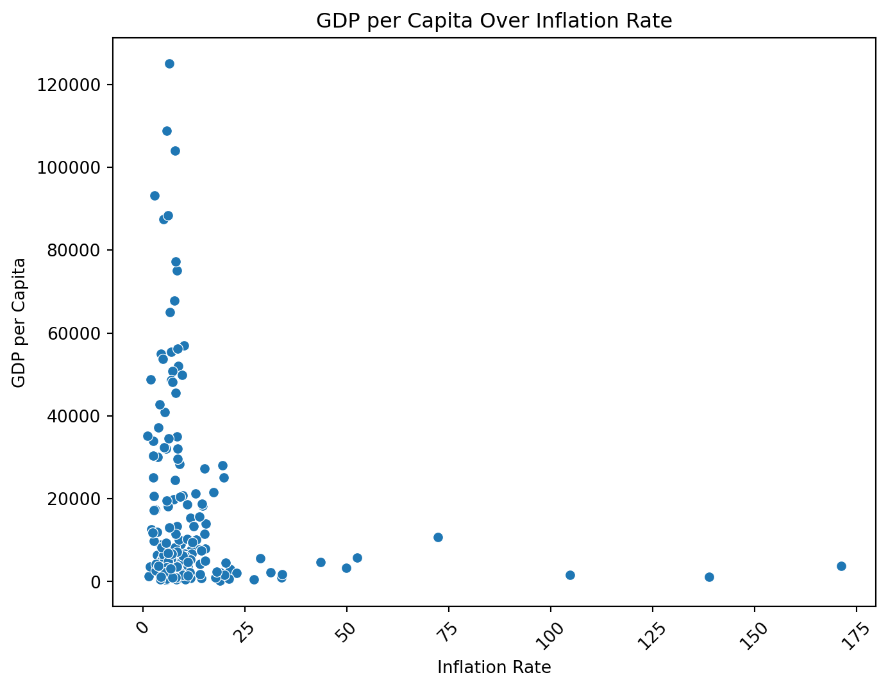
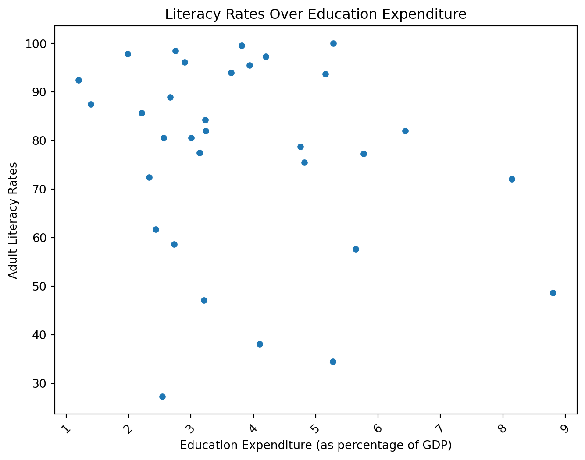
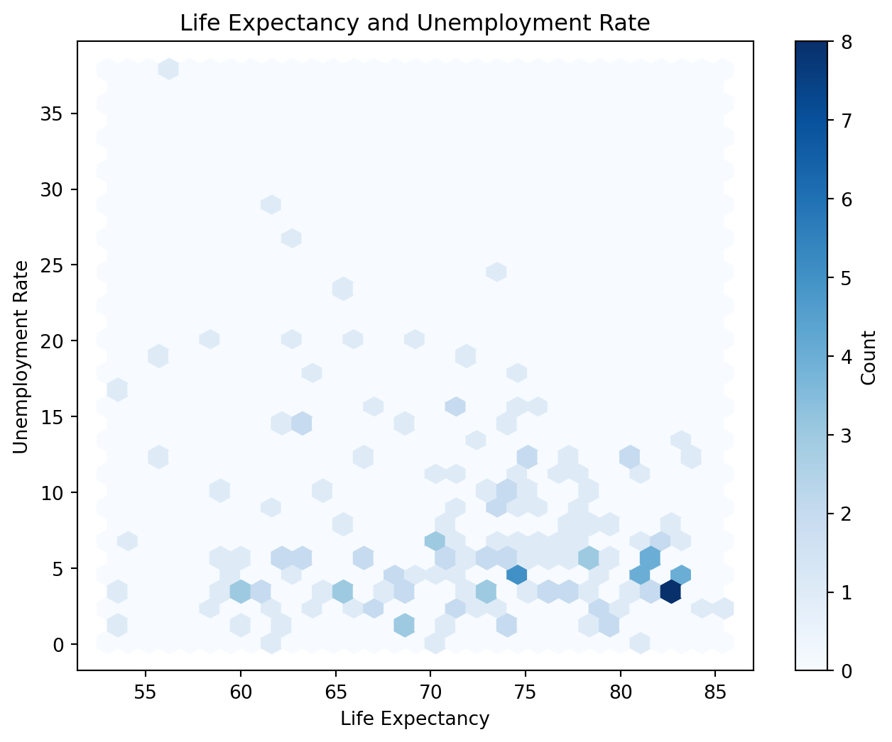

#importing packages
import numpy as np
import pandas as pd
import matplotlib.pyplot as plt
import seaborn as sns
# loading data
wdi = pd.read_csv("wdi.csv")WDI Data Analysis
Loading Packages and Data for Analysis
Running Analysis on the Code
# exploratory analysis
print(wdi.describe())
# focusing on adult_literacy_rate
# income_inequality
# gdp_per_capita inflation_rate exports_gdp_share gdp_growth_rate gdp_per_capita \
count 169.000000 169.000000 202.000000 203.000000
mean 12.493936 46.170395 4.368901 20345.707649
std 19.682433 34.001404 6.626811 31308.942225
min -6.687321 1.571162 -28.758591 259.025031
25% 5.518129 24.526642 2.438593 2570.563284
50% 7.967574 40.221277 4.204431 7587.588173
75% 11.665567 55.460067 6.200000 25982.630050
max 171.205491 211.278206 63.439864 240862.182448
adult_literacy_rate primary_school_enrolment_rate \
count 49.000000 114.000000
mean 79.574801 100.874048
std 19.375539 12.037532
min 27.280001 64.395401
25% 72.400002 94.191751
50% 83.779999 100.022247
75% 95.500000 105.035866
max 99.999977 138.192001
education_expenditure_gdp_share measles_immunisation_rate \
count 105.000000 193.000000
mean 4.226215 83.854922
std 2.069486 15.996083
min 1.027000 0.000000
25% 2.898000 76.000000
50% 3.887000 90.000000
75% 5.156000 96.000000
max 16.582462 99.000000
health_expenditure_gdp_share income_inequality unemployment_rate \
count 20.000000 28.000000 186.000000
mean 9.044045 38.328571 7.268661
std 2.703549 7.721488 5.827726
min 5.100000 26.400000 0.130000
25% 7.263266 32.900000 3.500750
50% 8.925000 38.100000 5.537500
75% 10.632500 43.125000 9.455250
max 16.571152 54.800000 37.852000
life_expectancy total_population
count 209.000000 2.170000e+02
mean 72.416519 3.653645e+07
std 7.713322 1.410583e+08
min 52.997000 1.131200e+04
25% 66.782000 8.087260e+05
50% 73.514634 6.465097e+06
75% 78.475000 2.606942e+07
max 85.377000 1.417173e+09 The GDP per capita variable is very interesting as it shows the massive disparities in wealth between countries, providing context for a lot of the other variables (min: 259, max: 240862). Adult literacy rate is interesting since there are only 20 entries and a lot of missing data. Likewise, income inequality is missing a significant amount of data.
Plotting the Data

Figure 1: Scatter plot showing the relationship between GDP per capita and total population.
Source: World Development Indicators dataset.
According to ?@fig-gdp-vs-pop countries with high inflation rates generally seem to have low GDP per capita values. Further analysis is needed to derive a correlation, especially regarding the lower inflation countries.

Figure 2: Scatter plot showing the relationship between Literacy Rates and education expenditure.
Source: World Development Indicators dataset.
Figure 2 is very sparse and has very few data points. This is an example of a plot from which conclusions cannot be drawn. We should be very cautious of plots like these as they are missing lots of data!

Figure 3: Scatter plot showing the relationship between Life Expectancy and Unemployment Rate.
Source: World Development Indicators dataset.
According to Figure 3 countries with high life expectancies generally seem to have low unemployment rates. This is likely the result of powerful countries having stronger economies and healthcare systems.
Key Statistics
The table below highlights the variables used
| mean | min | max | |
|---|---|---|---|
| gdp_per_capita | 20345.71 | 259.03 | 240862.18 |
| inflation_rate | 12.49 | -6.69 | 171.21 |
| adult_literacy_rate | 79.57 | 27.28 | 100.00 |
| education_expenditure_gdp_share | 4.23 | 1.03 | 16.58 |
| life_expectancy | 72.42 | 53.00 | 85.38 |
| unemployment_rate | 7.27 | 0.13 | 37.85 |